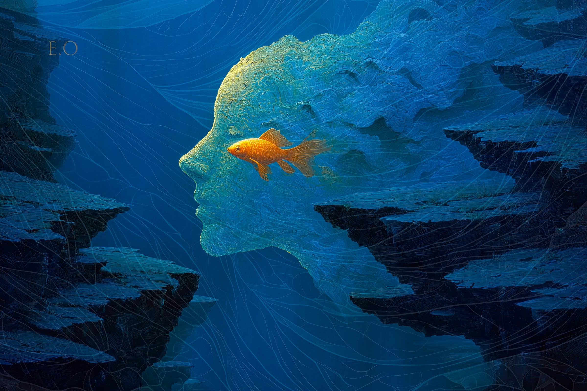

POETRY & AI IMAGERY
裴多菲诗意
以裴多菲·山多尔的《Lennék én folyóvíz…》为意象创作。
AI影像：E.O，Midjourney v7，2026年4月
裴多菲·山多尔（Petőfi Sándor，1823—1849）
中文翻译：OpenAI Codex

我愿化作一条河，
一道山间的激流，
沿着崎岖的河道，
穿行于岩石之间……
只要我的爱人
是一尾小鱼，
在我的波涛里来回游弋，
欢快地嬉水。
我愿化作一片荒林，
生长在河流两岸，
任狂风暴雨袭来，
我都迎面抵挡……
只要我的爱人
是一只小鸟，
在我怀里筑巢，
在我的枝头歌唱。
我愿化作一座城堡的废墟，
立在山岭最高处，
对自己悲凉的毁灭，
也只淡然承受……
只要我的爱人
是那常春藤，
舒展绿色的长臂，
攀过我的额头。

我愿化作一间小小的茅屋，
藏在幽深的谷底，
任风雨在茅草屋顶，
刻下一道道伤痕……
只要我的爱人
是屋里的火，
在我的炉膛中缓缓地、
温柔地燃烧。
我愿化作一片云，
像一面被撕裂的旗，
悬停在荒原上空，
疲惫不堪……
只要我的爱人
是黄昏，
让红色的光辉
映亮我忧郁苍白的脸。